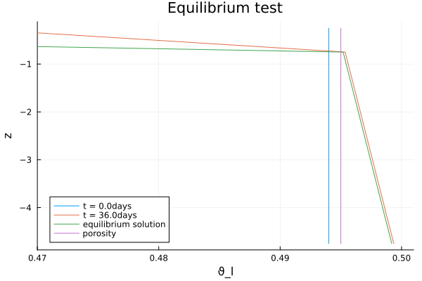

Hydrostatic Equilibrium test for Richards Equation
This tutorial shows how to use ClimaLSM code to solve Richards equation in a column of soil. We choose boundary conditions of zero flux at the top and bottom of the column, and then run the simulation long enough to see that the system is approaching hydrostatic equilibrium, where the gradient of the pressure head is equal and opposite the gradient of the gravitational head.
The equations are:
$\frac{ ∂ ϑ_l}{∂ t} = ∇ ⋅ K (ϑ_l; ν, ...) ∇h( ϑ_l, z; ν, ...).$
Here
$t$ is the time (s),
$z$ is the location in the vertical (m),
$K$ is the hydraulic conductivity (m/s),
$h$ is the hydraulic head (m),
$ϑ_l$ is the augmented volumetric liquid water fraction,
$ν, ...$ denotes parameters relating to soil type, such as porosity.
We will solve this equation in a 1-d domain with $z ∈ [-5,0]$, and with the following boundary and initial conditions:
$- K ∇h(t, z = 0) = 0 ẑ$
$-K ∇h(t, z = -5) = 0 ẑ$
$ϑ(t = 0, z) = ν-0.001$
$θ_i(t = 0, z) = 0.0.$
where $\nu$ is the porosity.
When solving Richards equation (not a fully integrated energy and hydrology model), the hydraulic conductivity is only a function of liquid moisture content.
Lastly, our formulation of this equation allows for a continuous solution in both saturated and unsaturated areas, following Woodward and Dawson (2000).
Preliminary setup
- Load external packages
using OrdinaryDiffEq: ODEProblem, solve, RK4
using Plots- Load CLIMAParameters and ClimaLSM modules
using ClimaCore
import CLIMAParameters as CP
if !("." in LOAD_PATH)
push!(LOAD_PATH, ".")
end
using ClimaLSM
using ClimaLSM.Domains: Column
using ClimaLSM.Soil
import ClimaLSM
import ClimaLSM.Parameters as LSMP
include(joinpath(pkgdir(ClimaLSM), "parameters", "create_parameters.jl"));- Define the float type desired (
Float64orFloat32), and get the parameter set, which holds constants used across CliMA models:
const FT = Float64;
earth_param_set = create_lsm_parameters(FT);Set up the soil model
We want to solve Richards equation alone, without simultaneously solving the heat equation. Because of that, we choose a RichardsModel. Taking a look at the documentation (linked), we see that we need to supply parameters, a domain, boundary conditions, and sources.
First, we define the parameters: porosity \nu, Ksat, the van Genuchten parameters vg_α, vg_m, vg_n, θ_r, and the specific storage value for the soil. Note that all values must be given in mks units.
Ksat = FT(0.0443 / (3600 * 100))
S_s = FT(1e-3)
ν = FT(0.495)
vg_α = FT(2.6)
vg_n = FT(2)
vg_m = 1 - 1 / vg_n
θ_r = FT(0)
params = Soil.RichardsParameters{FT}(ν, vg_α, vg_n, vg_m, Ksat, S_s, θ_r);Next, we define the domain. Here, we are considering a 1D domain, discretized using finite difference, with coordinates z:
zmax = FT(0)
zmin = FT(-5)
nelems = 10
soil_domain = Column(; zlim = (zmin, zmax), nelements = nelems);We also need to specify the boundary conditions. The user can specify two conditions, either at the top or at the bottom, and they can either be either on the state ϑ_l or on the flux -K∇h. Flux boundary conditions are passed as the (scalar) z-component of the flux f, i.e. F⃗ = f ẑ. In either case, the user must pass a function of the auxiliary variables p and time t:
surface_flux = Soil.FluxBC((p, t) -> eltype(t)(0.0))
bottom_flux = Soil.FluxBC((p, t) -> eltype(t)(0.0))
boundary_conditions = (; water = (top = surface_flux, bottom = bottom_flux));Lastly, in this case we don't have any sources, so we pass an empty tuple:
sources = ();Now we can make the model itself. This contains every piece of information needed to turn the continuous form of Richards equation into a set of ODEs, ready to be passed off to a timestepper.
soil = Soil.RichardsModel{FT}(;
parameters = params,
domain = soil_domain,
boundary_conditions = boundary_conditions,
sources = sources,
);
soil_ode! = make_ode_function(soil);Set up the simulation
We can now initialize the prognostic and auxiliary variable vectors, and take a peek at what those variables are:
Y, p, coords = initialize(soil);
Y.soil |> propertynames
p.soil |> propertynames
coords |> propertynames(:z,)Note that the variables are nested into Y and p in a hierarchical way. Since we have the vectors (composed of ClimaCore Fields handy, we can now set them to the desired initial conditions.
Y.soil.ϑ_l .= FT(0.494);Next, we turn to timestepping. We choose the initial and final times, as well as a timestep.
t0 = FT(0)
timeend = FT(60 * 60 * 24 * 36)
dt = FT(100);And then we can solve the system of equations, using OrdinaryDiffEq.jl:
prob = ODEProblem(soil_ode!, Y, (t0, timeend), p)
sol = solve(prob, RK4(); dt = dt, adaptive = false);Create some plots
We'll plot the moisture content vs depth in the soil, as well as the expected profile of ϑ_l in hydrostatic equilibrium. For ϑ_l values above porosity, the soil is saturated, and the pressure head changes from being equal to the matric potential to the pressure generated by compression of water and the soil matrix. The profile can be solved for analytically by (1) solving for the form that ϑ_l(z) must take in both the saturated and unsaturated zones to satisfy the steady-state requirement with zero flux boundary conditions, (2) requiring that at the interface between saturated and unsaturated zones, the water content equals porosity, and (3) solving for the location of the interface by requiring that the integrated water content at the end matches that at the beginning (yielding an interface location of z≈-0.56m).
t = sol.t ./ (60 * 60 * 24);
ϑ_l = [parent(sol.u[k].soil.ϑ_l) for k in 1:length(t)]
z = parent(coords.z)
plot(
ϑ_l[1],
z,
label = string("t = ", string(t[1]), "days"),
xlim = [0.47, 0.501],
ylabel = "z",
xlabel = "ϑ_l",
legend = :bottomleft,
title = "Equilibrium test",
);
plot!(ϑ_l[end], z, label = string("t = ", string(t[end]), "days"));
function hydrostatic_equilibrium(z, z_interface)
ν = 0.495
S_s = 1e-3
α = 2.6
n = 2.0
m = 0.5
if z < z_interface
return -S_s * (z - z_interface) + ν
else
return ν * (1 + (α * (z - z_interface))^n)^(-m)
end
end
plot!(hydrostatic_equilibrium.(z, -0.56), z, label = "equilibrium solution");
plot!(1e-3 .+ ϑ_l[1], z, label = "porosity");Save the output:
savefig("equilibrium_test_ϑ_l.png");
References
- Woodward and Dawson, (2000) SIAM J. Numer. Anal., 37, 701–724
This page was generated using Literate.jl.